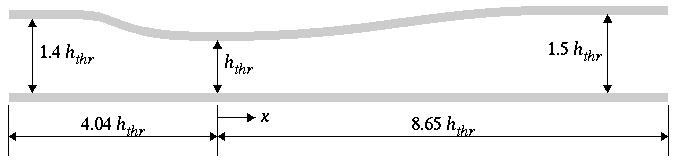
Transonic turbulent flow has been computed in a two-dimensional converging-diverging duct, using the WIND, NPARC, and NXAIR codes. [This is one of the example cases in the NPARC validation archive, accessible via the WWW at http://info.arnold.af.mil/nparc/Archive_information.html.] The geometry is shown in Figure 1. The throat height hthr = 0.14435 ft.
Extensive experimental data are available for this geometry, at a variety of flow conditions (Chen, Sajben, and Kroutil, 1979; Bogar, Sajben, and Kroutil, 1983; Salmon, Bogar, and Sajben, 1983; Sajben, Bogar, and Kroutil, 1984; Bogar, 1986). For this example case, flow enters the duct at about M = 0.46, accelerates to just under M = 1.3 slightly downstream of the throat, shocks down to about M = 0.78, then decelerates and leaves the duct at about M = 0.51.
All of the archive files of this validation case are available in the Unix compressed tar file transdif01.tar.Z. The files can then be accessed by the commands
uncompress transdif01.tar.Z
tar -xvof transdif01.tar
An 81 x 51 body-fitted computational mesh was generated algebraically, and is shown in Figure 2, with every other grid line removed for clarity. The same mesh was used with all three codes.
| Common Grid |
| sajben.cgd |
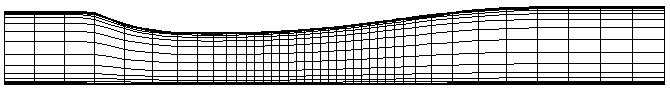
Adiabatic no-slip boundary conditions were used on both the upper and lower walls. The inlet boundary conditions corresponded to uniform flow at M = 0.46. A constant static pressure was specified at the exit boundary. For the first part of the calculation (2000 iterations for the WIND and NPARC codes, and 1000 for the NXAIR code), the exit pressure was set low enough to establish supersonic flow throughout the diverging portion of the duct. The exit pressure was then raised to the value used in the experiment.
The NPARC and NXAIR calculations used the Baldwin-Lomax turbulence model (Baldwin and Lomax, 1978), and the WIND calculation used the Spalart-Allmaras turbulence model (Spalart and Allmaras, 1992). For the most part, each of the three codes was run using default values for the various input parameters. No attempt was made to use the same numerical schemes, smoothing methods, etc., for the three calculations. The results of these calculations should therefore not be used to draw definitive conclusions about the relative performance of the three codes.
| WIND input data files |
| sajben.dat.1 |
| sajben.dat.2 |
| sajben.dat.3 |
| sajben.dat.4 |
| sajben.dat.5 |
| sajben.dat.6 |
| sajben.dat.7 |
| sajben.dat.8 |
| sajben.dat.9 |
| sajben.dat.10 |
| sajben.dat.11 |
| sajben.dat.12 |
| sajben.dat.13 |
| sajben.dat.14 |
| sajben.dat.15 |
| sajben.dat.16 |
| sajben.dat.17 |
| sajben.dat.18 |
| sajben.dat.19 |
| sajben.dat.20 |
| Common Solution | List |
| sajben.cfl | sajben.lis.Z |
The computed Mach number contours from the three codes are shown in Figures3(a)-3(c). The WIND and NXAIR results show a slightly more well-defined normal shock than the NPARC results. The NXAIR shock position is slightly downstream of the position predicted by the other two codes. WIND and NPARC predict similar boundary layer growth downstream of the normal shock, while NXAIR predicts a thinner boundary layer.
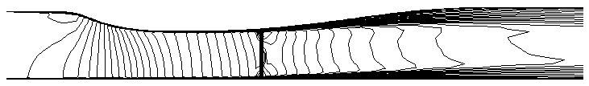
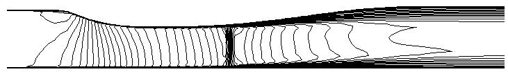
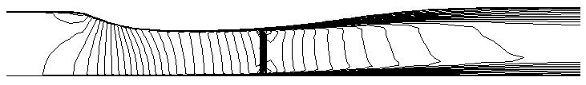
The computed static pressure distribution along the top and bottom walls is shown in Figures 4(a) and 4(b), along with the experimental data of Hsieh, Wardlaw, Bogar, and Coakley (1987). All three codes give essentially the same results upstream of the shock. The shock position in the NXAIR calculation is slightly too far downstream, and the WIND results agree a little better with the experimental data in the diverging part of the duct.
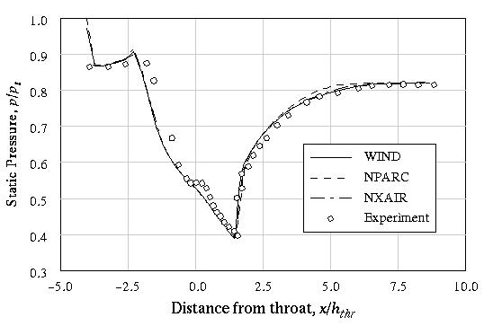
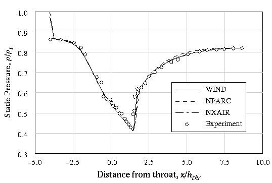
The computed u-velocity profiles at four locations are compared with the experimental data in Figures 5(a)-5(d). The data were taken at x/hthr = 1.73, 2.88, 4.61, and 6.34. The computed results are shown at i = 37, 52, 67, and 73, corresponding to x/hthr = 1.73, 2.90, 4.58, and 6.20. These are the grid indices closest to the experimental data locations.
Overall, the WIND and NPARC results are similar, with the WIND results perhaps in slightly better agreement with the experimental data. The big difference between the NXAIR results and those from the other two codes in Figure 5(a) is a result of the predicted shock location being too far downstream.
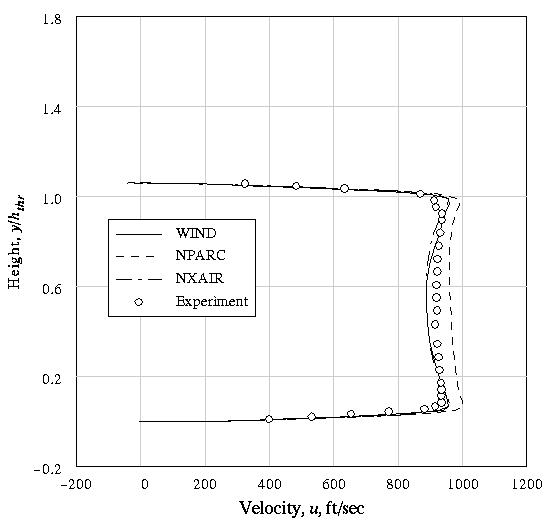
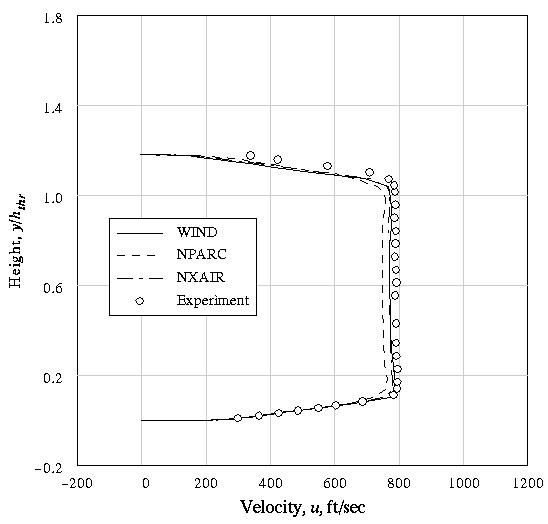
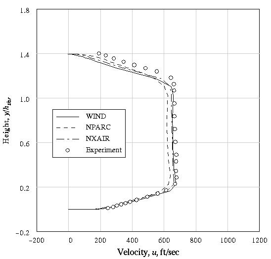
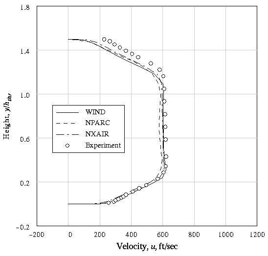
Baldwin, B. S., and Lomax, H. (1978) "Thin Layer Approximation and Algebraic Model for Separated Turbulent Flows," AIAA Paper 78-257.
Bogar, T. J., Sajben, M., and Kroutil, J. C. (1983) "Characteristic Frequencies of Transonic Diffuser Flow Oscillations," AIAA Journal, Vol. 21, No. 9, pp. 1232-1240.
Bogar, T. J. (1986) "Structure of Self-Excited Oscillations in Transonic Diffuser Flows," AIAA Journal, Vol. 24, No. 1, pp. 54-61.
Chen, C. P., Sajben, M., and Kroutil, J. C. (1979) "Shock Wave Oscillations in a Transonic Diffuser Flow," AIAA Journal, Vol. 17, No. 10, pp. 1076-1083.
Hsieh, T., Bogar, T. J., and Coakley, T. J. (1987) "Numerical Simulation and Comparison with Experiment for Self-Excited Oscillations in a Diffuser Flow," AIAA Journal, Vol. 25, No. 7, pp. 936-943.
Hsieh, T., Wardlaw A. B. Jr., Bogar, T. J., and Coakley, T. J. (1987) "Numerical Investigation of Unsteady Inlet Flowfields," AIAA Journal, Vol. 25, No. 1, pp. 75-81.
Sajben, M., Bogar, T. J., and Kroutil, J. C. (1984) "Forced Oscillation Experiments in Supercritical Diffuser Flows," AIAA Journal, Vol. 22, No. 4, pp. 465-474.
Salmon, J. T., Bogar, T. J., and Sajben, M. (1983) "Laser Doppler Velocimeter Measurements in Unsteady, Separated Transonic Diffuser Flows," Vol. 21, No. 12, pp. 1690-1697.
Spalart, P. R., and Allmaras, S. R. (1992) "A One-Equation Turbulence Model for Aerodynamic Flows," AIAA Paper 92-0439.
This validation test case was performed by Charles Towne. (216) 433-5851. MS 5-11, NASA Lewis Research Center, 21000 Brook Park Road, Cleveland, Ohio, 44135.